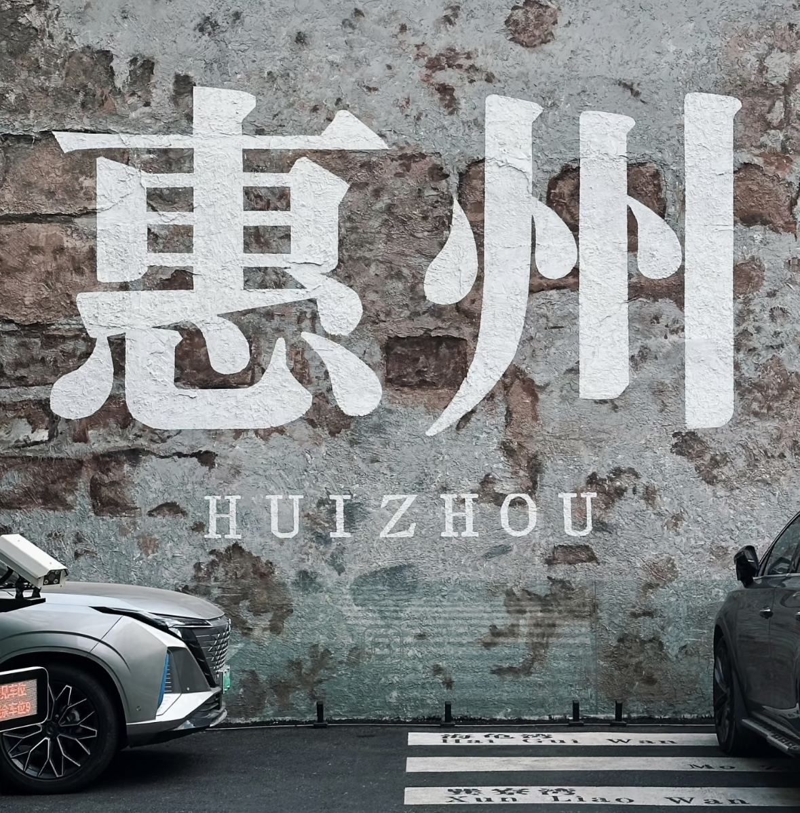
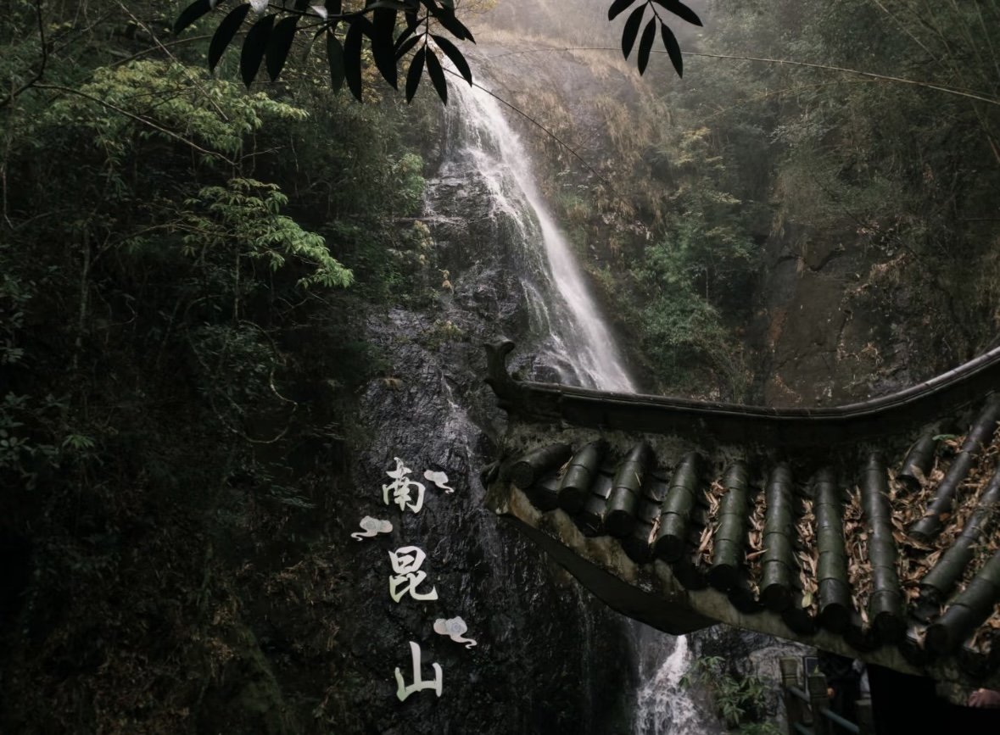
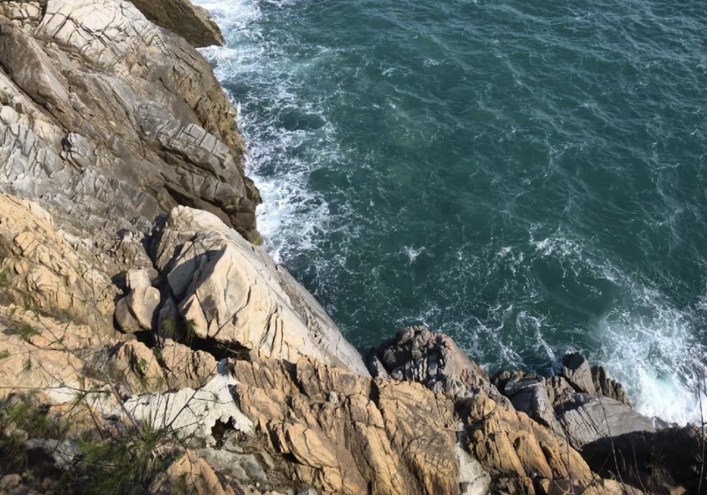

梅菜扣肉
惠州传统名菜，选用当地特产梅菜与五花肉精心制作，肉质肥而不腻，梅菜吸收了肉汁，味道鲜美。

惠州，一座位于粤港澳大湾区的美丽城市，这里有西湖的恬静、大亚湾的壮阔、客家文化的深厚，还有让人回味无穷的特色美食。
惠州，位于广东省东南部，地处珠江三角洲东岸，是粤港澳大湾区的重要节点城市。东接汕尾，西邻深圳、东莞，南临大亚湾，北连河源，地理位置优越，交通便利。这座城市总面积11347平方公里，常住人口超过600万，既有现代化的都市风貌，又有深厚的历史文化底蕴，更有令人陶醉的自然风光，被誉为"岭南名郡"和"粤东门户"。
惠州历史悠久，人文荟萃。自隋朝开皇十一年（591年）设循州总管府起，至今已有1400多年的建城史。这里曾是古代海上丝绸之路的重要节点，见证了中外文化交流的繁荣。北宋时期，大文豪苏东坡被贬惠州，在此居住两年七个月，留下了"日啖荔枝三百颗，不辞长作岭南人"的千古名句，也为惠州的文化发展注入了深厚底蕴。历代文人墨客如葛洪、李商隐、杨万里等都在此留下足迹，使惠州成为岭南文化的重要发祥地之一。
惠州是客家文化、广府文化和潮汕文化的交汇融合之地，多元文化在此和谐共生。作为客家文化的重要发源地之一，这里保存着众多客家围屋、古村落，客家山歌、酿豆腐、梅菜扣肉等文化元素和美食在这里代代相传。同时，惠州的民俗活动丰富多彩，如舞麒麟、舞春牛、元宵灯会等传统节庆活动，展现了浓郁的地方特色和人文魅力。
惠州的自然景观得天独厚，山水相依，海湖交融。国家5A级旅游景区惠州西湖，以"五湖六桥十八景"闻名，与杭州西湖、颍州西湖并称中国三大西湖，素有"苎萝西子"之美誉。大亚湾和双月湾拥有长达200多公里的海岸线，海水清澈，沙滩细腻，是滨海旅游度假的理想胜地。国家森林公园南昆山被誉为"北回归线上的绿洲"，森林覆盖率高达96%，是避暑养生的天然氧吧。此外，还有罗浮山、象头山、红花湖等众多自然生态景区，构成了惠州独特的生态画卷。
如今的惠州，正积极融入粤港澳大湾区建设，经济社会发展日新月异。作为珠三角重要的制造业基地，惠州拥有电子信息、石油化工、新能源等支柱产业，TCL、德赛、亿纬锂能等知名企业在此扎根发展。同时，惠州坚持绿色发展理念，先后获得国家历史文化名城、中国优秀旅游城市、国家园林城市、全国文明城市等荣誉称号。这座古老而年轻的城市，正以开放的姿态、蓬勃的活力，书写着高质量发展的新篇章，成为粤港澳大湾区一颗璀璨的明珠。
惠州传统名菜，选用当地特产梅菜与五花肉精心制作，肉质肥而不腻，梅菜吸收了肉汁，味道鲜美。
客家特色美食，将豆腐挖空填入肉馅蒸制而成，口感丰富，豆腐的嫩滑与肉馅的鲜香完美结合。
惠州特色美食，用盐和香料腌制后焗制而成，鸡肉鲜嫩多汁，皮脆肉滑，香气四溢。
惠州西湖是国家5A级旅游景区，与杭州西湖、颍州西湖并称为中国三大西湖。这里湖水清澈，风光秀丽，有"半城山色半城湖"的美誉。
大亚湾是惠州著名的滨海旅游区，拥有长达52公里的黄金海岸线，沙滩细腻，海水清澈，是休闲度假的理想去处。

南昆山是国家森林公园，被誉为"北回归线上的绿洲"。这里森林茂密，空气清新，有众多的瀑布和溪流，是避暑度假的胜地。

双月湾因形状似两轮新月而得名，是惠州最美丽的海湾之一。这里有长达20公里的沙滩，海水湛蓝，是欣赏日出日落的绝佳地点。
鹅城大桥是惠州的标志性建筑之一，横跨东江，连接惠城区与博罗县。这座现代化的斜拉桥在夜晚灯光璀璨，是惠州城市夜景的重要组成部分。
水东街是惠州历史悠久的商业街区，保留了大量明清时期的骑楼建筑。这里汇聚了惠州传统美食、手工艺品和特色商铺，是体验惠州历史文化的好去处。